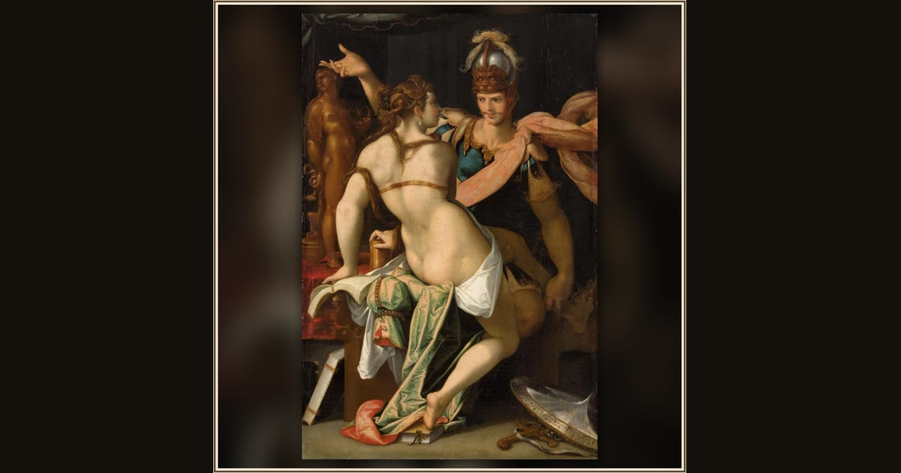

Odysseus and Circe
Bartholomeus Spranger · c. 1586–1587 · Kunsthistorisches Museum Vienna · Vienna, Austria
The enchantress Circe leans close to Odysseus with her potion cup, while his transformed, animal-eyed companions watch from the shadows. Explore its place in Book X of the Odyssey.